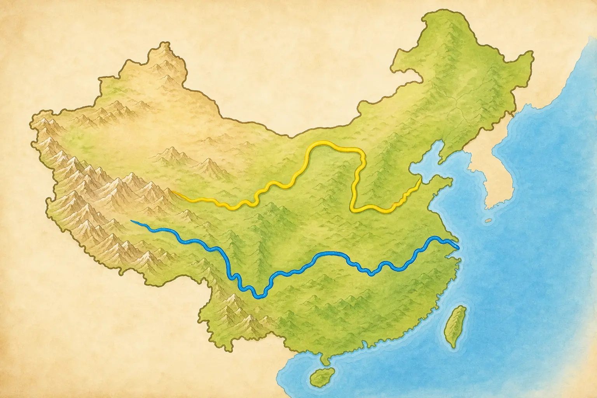
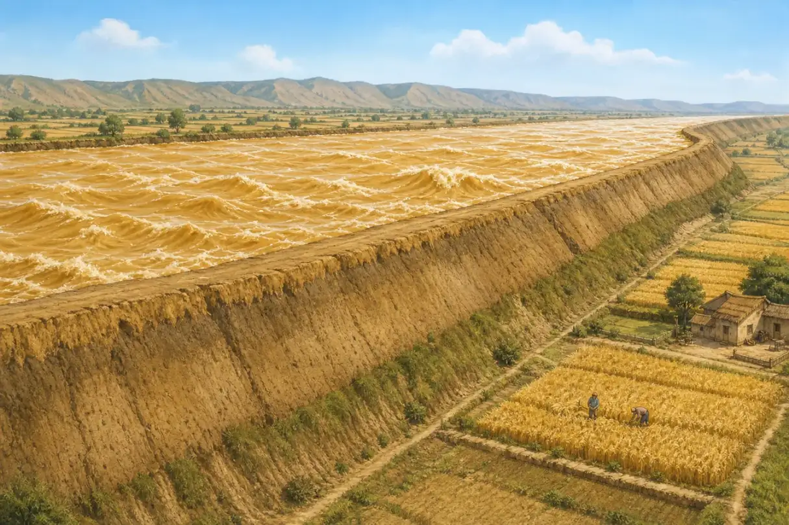
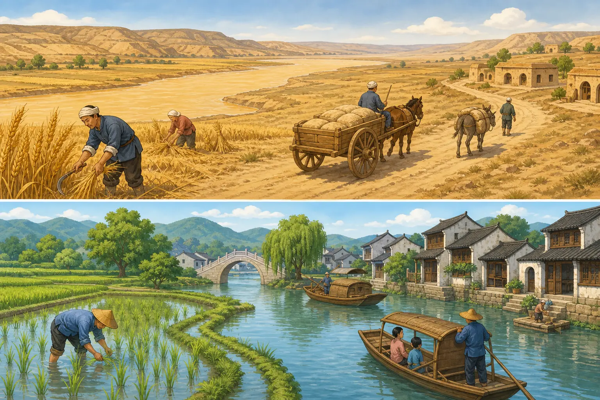

长江与黄河：两条“母亲河”讲的不只一个故事
The Yangtze and the Yellow River: More Than One Story
阅读难度 · 困难Reading level · Hard
Page 1
地图上的两条线，真的能量得一清二楚吗？
Can Two Lines on a Map Really Be Measured Exactly?

This is a simplified map without a scale: yellow marks the more northerly Yellow River, and blue marks the more southerly Yangtze.
把手指放在中国西部的高原上，再一路向东移动，你可以追出两条长长的水路。长江从青藏高原的源区出发，干流流经许多省级地区，最后进入东海；官方资料常把它写成约六千四百公里。黄河发源于巴颜喀拉山北麓，绕出一个巨大的“几”字，最后从山东进入渤海，全长约五千四百六十四公里。
可是，河流不像操场上的直跑道。测量者要先决定哪一条源头溪流算起点，再沿弯曲的主河道中心量到选定的河口。河流还会截弯、改道，在河口堆出新土地；地图精度和测量时间不同，结果也可能有差别。因此，“约六千四百公里”比假装每一米都永远不变更准确。
人们常把长江和黄河称为“母亲河”，因为许多社区长期从河里取水、捕鱼、航行、灌溉，也在河边建起城镇。这个称呼表达感谢和亲近，却不是一张血缘证明：它不等于所有中国人的祖先都来自这两条河边，也不等于中国历史只有两条河的故事。
Place a finger on the high plateau in western China and move eastward, and you can trace two immense waterways. The Yangtze begins in the headwater region of the Tibetan Plateau, crosses many provincial-level regions, and enters the East China Sea. Official sources commonly give its length as about 6,400 kilometers. The Yellow River begins on the northern side of the Bayan Har Mountains, makes a huge looping bend, and enters the Bohai Sea in Shandong after about 5,464 kilometers.
A river, however, is not a straight running track. Surveyors must choose which headwater counts as the beginning, then measure along the winding center of the main channel to a chosen mouth. Rivers cut across bends, change course, and build new land at their deltas. Different maps and measurement dates can therefore produce different answers. “About 6,400 kilometers” is more truthful than pretending that every meter will stay fixed forever.
People often call the Yangtze and Yellow River “mother rivers.” For many communities, the rivers have supplied water, fish, transport, irrigation, and places to build towns. The name expresses gratitude and belonging, but it is not a family certificate. It does not mean that every Chinese person's ancestors came from these two riverbanks, or that China's past contains only two river stories.
Page 2
黄河为什么会变成“地上悬河”？
How Did Parts of the Yellow River Rise Above the Plain?

This exaggerated cutaway illustrates parts of the lower channel above the land outside its levees; the height is not drawn to measured scale.
黄河的黄色主要来自悬浮在水中的细小泥沙。中游许多支流经过黄土高原，暴雨很容易冲刷松散的黄土；坡地怎样被利用、植被保存得怎样，也会改变进入河里的泥沙量。水和沙来自不同区域、在不同季节到达，使黄河不只是“水多不多”的问题，还要同时计算“沙往哪里走”。
河水进入平坦的下游后，坡度减小、流速改变，一部分泥沙便沉到河道里。人们为了保护村庄和农田，长期修筑、加高堤防；堤防挡住洪水，也把许多水和沙限制在两堤之间。河床反复淤高后，黄河下游现有河床一般比堤外地面高约四到六米，局部更高，于是有了“地上悬河”的说法。
这时若大洪水冲破堤坝，水可能沿较低的平原另找道路，造成决口和改道。不过，把黄河叫作“脾气暴躁”会藏起真正原因。强降雨、黄土侵蚀、泥沙沉积和河道本身是自然过程；在哪里筑堤、怎样利用坡地和滩区、如何调度水库，则是人的选择。今天的防洪包括堤防、水库、滞洪区、水土保持和调水调沙。它们大幅降低了风险，却不能让河流从此失去变化。
The Yellow River's color comes mainly from fine sediment suspended in the water. Many middle-reach tributaries cross the Loess Plateau, where intense rain can wash loose soil from the land. The way slopes are farmed and the amount of vegetation left on them also affect how much sediment reaches the river. Because much of the water and sediment come from different places and arrive at different times, river managers must ask not only “How much water?” but also “Where will the sediment go?”
When the river reaches the flatter lower plain, its slope and speed change, and some of the sediment settles into the channel. For centuries, people built and raised levees to protect farms and settlements. Levees hold back floods, but they also keep much of the water and sediment between two walls. As the bed accumulated sediment, it rose. Today, the existing lower channel is generally about four to six meters above the land beyond the levees, and higher in some places. This is the “suspended river” or “river above ground.”
If a large flood breaks a levee, the water may seek a lower route across the plain, causing a breach or even a change of course. Calling the river “angry” hides the real explanation. Heavy rain, erosion, sediment, and channel movement are natural processes. Where people build levees, how they use slopes and floodplains, and how they operate reservoirs are human choices. Modern protection combines levees, reservoirs, flood-storage areas, soil conservation, and controlled releases of water and sediment. These measures have greatly reduced risk, but they cannot make a living river stop changing.
Page 3
长江不是从头到尾都“宽阔沉稳”
The Yangtze Is Not Wide and Steady Everywhere
This romanticized Three Gorges illustration is closer to a poetic image; it is not a documentary view after the reservoir was formed.
长江上游从高原和山地落下，有急流、峡谷和巨大的高差；到了中游，它穿过平原，与洞庭湖、鄱阳湖等湖泊交换水；下游接近海洋，又受到三角洲和潮汐影响。一条六千多公里的河不可能只有一种“性格”。雨季若许多支流同时涨水，中下游同样会发生严重洪水。与干流相连的湖泊和湿地能够暂时容纳一部分洪水，也给鱼、鸟和水生植物留下栖息地；围垦、筑堤和城市扩张缩小这些空间时，防洪与生态都会变得更复杂。
唐代诗人李白在《早发白帝城》中写“千里江陵一日还”，让船仿佛顺着急流飞过三峡。“千里”在诗里传出距离遥远，“一日还”传出轻快和惊喜，却不是今天用来计算航速的测量记录。诗保留的是一次旅行的感受，不是水文报告。
今天的三峡也已经不同。三峡工程在宜昌附近拦江，水库改变了上游水位和流速。它能发电、帮助储蓄洪水，并改善部分航运条件；与此同时，大量居民为水库搬迁，一些城镇、遗址和土地被淹没，水流与泥沙的变化也影响下游河床、湿地和鱼类。人们还在用生态调度等办法减轻影响。这样的工程不能只用“伟大”或“破坏”两个字总结：真正的问题是，谁得到好处、谁承担代价，又怎样长期照顾整条河。
In its upper reaches, the Yangtze drops from plateaus and mountains through rapids, gorges, and enormous changes in elevation. In the middle reaches, it crosses plains and exchanges water with lakes such as Dongting and Poyang. Near the sea, its lower reaches meet a delta and tides. A river more than 6,000 kilometers long cannot have just one “personality.” When many tributaries rise together in the rainy season, the middle and lower river can suffer disastrous floods. Connected lakes and wetlands temporarily hold some floodwater and provide habitat for fish, birds, and aquatic plants. Reclamation, levees, and urban growth have reduced some of that space, making both flood safety and ecology more difficult.
In the Tang dynasty, Li Bai wrote of leaving Baidi City and returning “a thousand li to Jiangling in one day.” The poem makes his boat seem to fly through the Three Gorges. “A thousand li” communicates a great distance, while “in one day” carries speed and delight. It is not a modern speed measurement. The poem preserves the feeling of a journey, not a hydrology report.
The Three Gorges of today have changed as well. The Three Gorges Project blocks the river near Yichang, and its reservoir altered upstream water levels and currents. It generates electricity, helps store floodwater, and improves some navigation. At the same time, large numbers of residents were resettled; towns, archaeological sites, and land were submerged; and changed flows and sediment have affected downstream channels, wetlands, and fish. Managers have also tested environmental releases to reduce some harm. A project this large cannot be summed up as simply “great” or “destructive.” The harder questions are who receives the benefits, who bears the costs, and how the whole river will be cared for over time.
Page 4
“北麦南稻”是一条线，还是一团交错的线？
Is “Wheat North, Rice South” a Border - or a Tangle of Lines?

This concept illustration deliberately separates northern wheat from southern rice; real crops, transport, and homes do not follow such a neat border.
考古学确实发现了一个大致趋势：北方许多早期农耕传统重视粟和黍，长江中下游许多社区发展了稻作。可是，作物很早就在移动。考古遗址显示，稻向北传播，粟也进入长江流域；南北过渡地带还出现过混合种植。后来小麦传入、灌溉扩展、市场和运输改变，农民的选择更不可能只由“住在哪条河边”决定。气温、雨量、生长期、土壤、水源、技术、价格和饮食习惯都在一起起作用。
文明的故事也不能切成“黄河生出一个中国，长江补上另一半”。黄河流域有许多不同的新石器社区；长江下游的良渚人种稻、建城，还修筑复杂的水利系统。辽河流域等其他地区也发展出各有特点的文化，并通过物品、技术和观念彼此交流。今天所说的中华文明，更像许多河流不断汇合，而不是一粒种子在唯一地点发芽。
所以，“北麦南稻”适合当作帮助记忆的大概图景，却不能当成规则；“母亲河”适合表达感情，也不能代替考古证据。读一条河，既要看它怎样影响人，也要看不同的人怎样种田、筑城、修堤、搬迁，又怎样反过来改变河流。
Archaeology does show a broad pattern: many early northern farming traditions centered on foxtail and broomcorn millet, while many communities in the middle and lower Yangtze developed rice farming. Crops began moving early, however. Archaeological sites show rice spreading north and millet entering the Yangtze basin, with mixed farming in the transition zone. Later, imported wheat, expanded irrigation, transport, and markets made farmers' choices even less dependent on one river boundary. Temperature, rainfall, growing season, soil, water, technology, prices, and food traditions all work together.
The story of civilization cannot be divided into “the Yellow River created China, and the Yangtze added the other half.” The Yellow River basin held many different Neolithic communities. At Liangzhu in the lower Yangtze, people farmed rice, built a city, and constructed a complex water-management system. The Liao River region and other areas also developed distinctive cultures that exchanged objects, skills, and ideas. What we now call Chinese civilization is more like many rivers joining than one seed sprouting in a single place.
“Wheat in the north, rice in the south” is useful as a rough memory aid, not as a rule. “Mother river” can express feeling, but it cannot replace archaeological evidence. To read a river well, we must ask both how it changed people's lives and how different people farmed, built cities, raised levees, moved homes, and changed the river in return.
河流不是故事的背景，它也在故事里行动
A River Is Not Just the Background of a Story
地图把长江和黄河画成两条清楚的线，真实的河却不断搬运水和沙、连接支流与湖泊，也穿过许多民族和地区的生活。人们依靠河流，又用堤坝、农田、城市和水库改变河流。“母亲河”最值得保留的意思，不是说一切都起源于同一个地方，而是提醒我们：接受一条河的赠予，也要认真面对照顾它的责任。
A map turns the Yangtze and Yellow River into two clean lines. Real rivers keep moving water and sediment, linking tributaries and lakes, and passing through the lives of many peoples and regions. People depend on rivers, then change them with levees, farms, cities, and reservoirs. The most useful meaning of “mother river” is not that everything began in one place. It is the reminder that receiving a river's gifts also brings a responsibility to care for it.